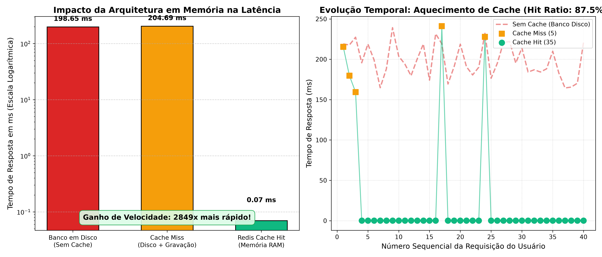

Aula 04
ADS16 • 2h (120 min)
Modelo Chave-Valor (Redis)
Semestre 2026.2
Modelo Chave-Valor: Arquitetura em Memória e Estruturas Nativas do Redis
Disciplina: Banco de Dados Não-Relacionais | Docente: Prof. Me. Reginaldo Pereira Fernandes (IFCE Campus Tauá)
Simulador em Tempo Real: Busca no Catálogo com Cache-Aside
Experimente a diferença entre buscar no banco em disco (PostgreSQL/Mongo) e responder pela memória RAM do Redis com TTL.
Termos Rápidos:
Status da Última Chamada
Aguardando consulta...
Latência Mensurada
-- ms
Tempo de Vida no Redis (TTL)
-- s
Speedup (Aceleração)
--
// Terminal de Eventos do Simulador Cache-Aside (IFCE Campus Tauá)...
// Digite um termo acima e clique em 'Consultar' para ver o ciclo de vida.
Comprovação Empírica no Laboratório: Benchmarking Real
Medições reais colhidas pelo script demonstracao_aula04.py executado sob 40 consultas sequenciais:
